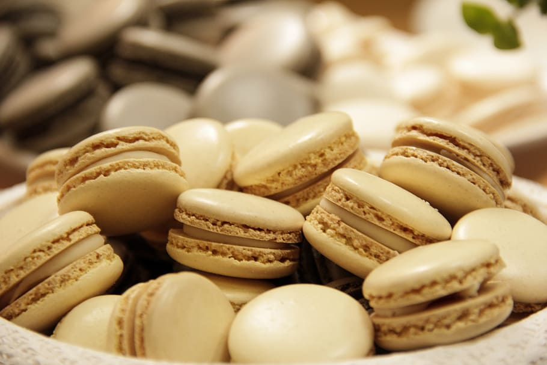
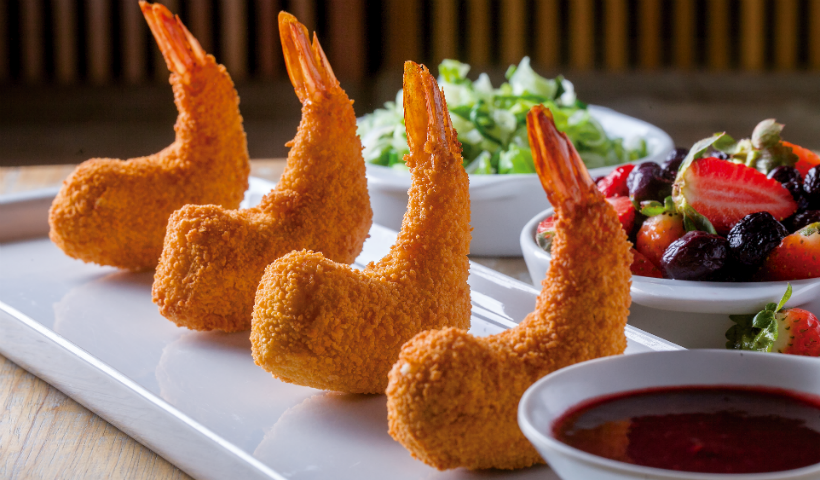

Somos responsaveis por trazer receitas gostosas e faceis de fazer em casa
Nosso site de receitas tem como missão inspirar e capacitar pessoas a descobrirem o prazer da culinária, fornecendo uma plataforma abrangente e acessível para compartilhar e explorar uma variedade de receitas deliciosas, e criativas . Queremos promover a alimentação saudável, o bem-estar e a conexão através da comida
